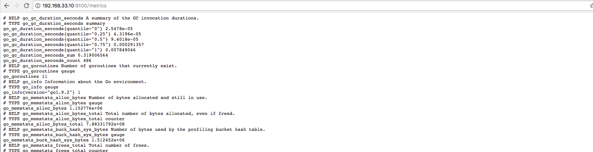
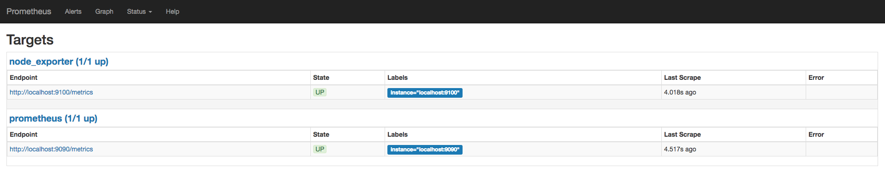
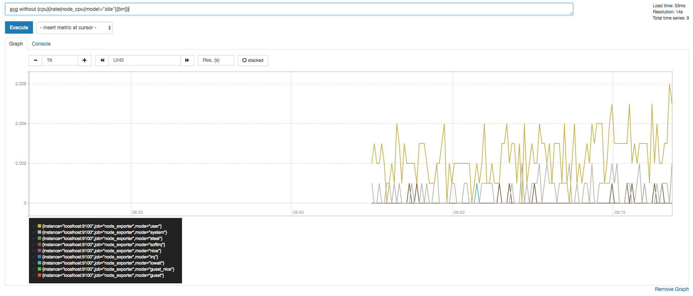
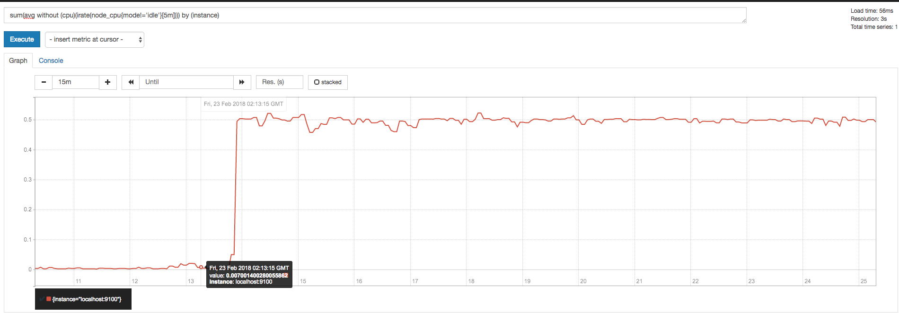
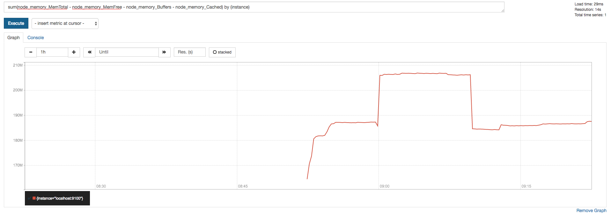
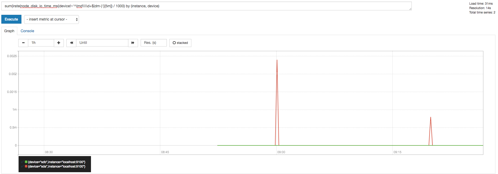

使用NodeExporter监控主机
在上一小节中，我们尝试了部署Prometheus Server，并且采集了Prometheus自身的一些运行指标数据。通过Prometheus内置的UI可以对这些采集到的样本数据进行查询，过滤以及聚合，同时Prometheus内置的UI还支持简单的图形化显示需求。
在Prometheus Server中将用于获取监控样本数据的服务称为一个target实例(例如Prometheus自身)。对于某些应用和服务而言它们可能内置了对Prometheus的支持，而对于没有内置Prometheus支持的监控需求，需要运行单独的采集程序，这些程序被称为Exporter，通过这些Exporter程序，可以使Prometheus可以从这些Exporter间接的获取到相应的监控数据。
接下来，为了能够采集到主机的监控指标（CPU，内存，磁盘），我们需要在主机上运行一个Node Exporter程序，实现对主机监控的支持。
安装Node Exporter
创建用户
sudo useradd --no-create-home node_exporter
获取并安装软件包
cd ~
curl -LO https://github.com/prometheus/node_exporter/releases/download/v0.15.1/node_exporter-0.15.1.linux-amd64.tar.gz
tar xvf node_exporter-0.15.1.linux-amd64.tar.gz
sudo cp node_exporter-0.15.1.linux-amd64/node_exporter /usr/local/bin
sudo chown node_exporter:node_exporter /usr/local/bin/node_exporter
rm -rf node_exporter-0.15.1.linux-amd64.tar.gz node_exporter-0.15.1.linux-amd64
创建Node Exporter的Service Unit文件
sudo vim /etc/systemd/system/node_exporter.service
[Unit]
Description=Node Exporter
Wants=network-online.target
After=network-online.target
[Service]
User=node_exporter
Group=node_exporter
Type=simple
ExecStart=/usr/local/bin/node_exporter
[Install]
WantedBy=multi-user.target
启动Node Exporter
service node_exporter start
NodeExporter启动后，访问http://192.168.33.10:9100/metrics，我们可以获取到当前NodeExporter所在主机的当前资源使用情况的监控数据。

配置主机监控采集任务
配置Prometheus采集主机信息
编辑配置文件/etc/prometheus/prometheus.yml，并添加以下内容：
- job_name: 'node_exporter'
scrape_interval: 5s
static_configs:
- targets: ['localhost:9100']
这里我们添加了一个新的Job名字为node_exporter。并且定义了一个实例为localhost:9100。
完整的Prometheus配置文件/etc/prometheus/prometheus.yml如下：
global:
scrape_interval: 15s
scrape_configs:
- job_name: 'prometheus'
scrape_interval: 5s
static_configs:
- targets: ['localhost:9090']
- job_name: 'node_exporter'
scrape_interval: 5s
static_configs:
- targets: ['localhost:9100']
重新启动Prometheus Server
sudo service prometheus restart
验证结果
访问http://192.168.33.10:9090/targets查看所有的采集目标实例，这时我们可以看到新的采集任务：node_exporter以及相应的实例。

这时我们可以通过PromQL语言在，Prometheus UI上直接查询主机相关资源的使用情况。
例如:
按CPU模式查询主机的CPU使用率：
avg without (cpu)(irate(node_cpu{mode!="idle"}[5m]))

查询主机CPU总体使用率：
sum(avg without (cpu)(irate(node_cpu{mode!='idle'}[5m]))) by (instance)

按主机查询主机内存使用量：
sum(node_memory_MemTotal - node_memory_MemFree - node_memory_Buffers - node_memory_Cached) by (instance)

按主机查询各个磁盘的IO状态：
sum(irate(node_disk_io_time_ms{device!~'^(md\\\\d+$|dm-)'}[5m]) / 1000) by (instance, device)
